Chapter 7: Book XI. Theory of Planes, Coplanar Lines, and Solid Angles¶
7.1 Book XI. Theory of Planes, Coplanar Lines, and Solid Angles¶
_______
DEFINITIONS.
i. When two or more lines are in one plane they are said to be coplanar.
ii. The angle which one plane makes with another is called a dihedral angle.
iii. A solid angle is that which is made by more than two plane angles, in different planes, meeting in a point.
iv. The point is called the vertex of the solid angle.
v. If a solid angle be composed of three plane angles it is called a trihedral angle; if of four, a tetrahedral angle; and if of more than four, a polyhedral angle.
PROP. I.—Theorem.
One part (AB) of a right line cannot be in a plane (X), and another part (BC) not in it.
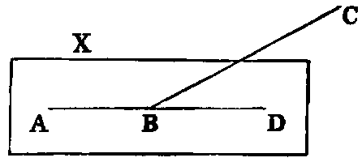
Dem.—Since AB is in the plane X, it can be produced in it [Bk. I. Post. ii.]; let it be produced to D. Then, if BC be not in X, let any other plane passing through AD be turned round AD until it passes through the point C. Now, because the points B, C are in this second plane, the line BC [I., Def. vi.] is in it. Therefore the two right lines ABC, ABD lying in one plane have a common segment AB, which is impossible. Therefore, &c.
PROP. II.—Theorem.
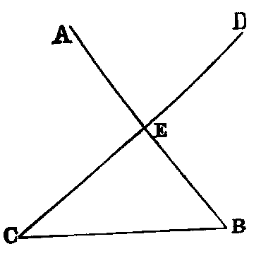
Two right lines (AB, CD) which intersect one another in any point (E) are coplanar, and so also are any three right lines (EC, CB, BE) which form a triangle.
Dem.—Let any plane pass through EB, and be turned round it until it passes through C. Then because the points E, C are in this plane, the right line EC is in it [I., Def. vi.]. For the same reason the line BC is in it. Therefore the lines EC, CB, BE are coplanar; but AB and CD are two of these lines. Hence AB and CD are coplanar.
PROP. III.—Theorem.
If two planes (AB, BC) cut one another, their common section (BD) is a right line.
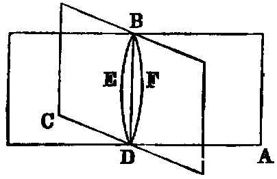
Dem.—If not from B to D, draw in the plane AB the right line BED, and in the plane BC the right line BFD. Then the right lines BED, BFD enclose a space, which [I., Axiom x.] is impossible. Therefore the common section BD of the two planes must be a right line.
PROP. IV.—Theorem.
If a right line (EF) be perpendicular to each of two intersecting lines (AB, CD), it will be perpendicular to any line GH, which is both coplanar and concurrent with them.
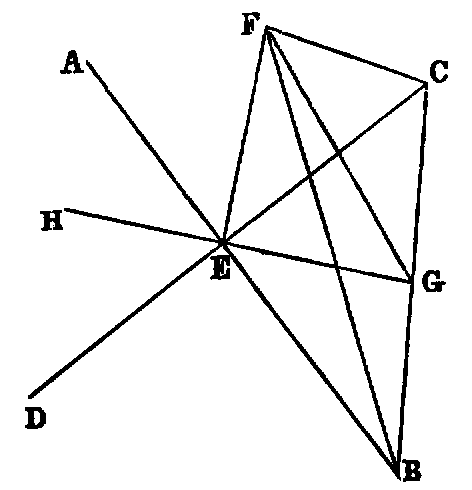
Dem.—Through any point G in GH draw a line BC intersecting AB, CD, and so as to be bisected in G; and join any point F in EF to B, G, C. Then, because EF is perpendicular to the lines EB, EC, we have
| BF2 = BE2 + EF2, and CF2 = CE2 + EF2; | |||||||
|---|---|---|---|---|---|---|---|
| ∴ BF2 + CF2 | = BE2 + CE2 + 2EF2. | ||||||
| Again | BF2 + CF2 | = 2BG2 + 2GF2 [II. x. Ex. 2], | |||||
| and | BE2 + CE2 | = 2BG2 + 2GE2; | |||||
| ∴ 2BG2 + 2GF2 | = 2BG2 + 2GE2 + 2EF2; | ||||||
| ∴ GF2 | = GE2 + EF2. |
Hence the angle GEF is right, and EF is perpendicular to EG.
Def. vi.—A line such as EF, which is perpendicular to a system of concurrent and coplanar lines, is said to be perpendicular to the plane of these lines, and is called a normal to it.
Cor. 1.—The normal is the least line that may be drawn from a given point to a given plane; and of all others that may be drawn to it, the lines of any system making equal angles with the normal are equal to each other.
Cor. 2.—A perpendicular to each of two intersecting lines is normal to their plane.
PROP. V.—Theorem.
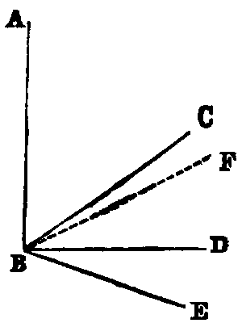
If three concurrent lines (BC, BD, BE) have a common perpendicular (AB), they are coplanar.
Dem.—For if possible let BC be not coplanar with BD, BE, and let the plane of AB, BC intersect the plane of BD, BE in the line BF. Then [XI. iii.] BF is a right line; and, since it is coplanar with BD, BE, which are each perpendicular to AB, it is [XI. iv.] perpendicular to AB. Therefore the angle ABF is right; and the angle ABC is right (hyp.). Hence ABC is equal to ABF, which is impossible [I., Axiom ix.]. Therefore the lines BC, BD, BE are coplanar.
PROP. VI.—Theorem.
If two right lines (AB, CD) be normals to the same plane (X), they shall be parallel to one another.
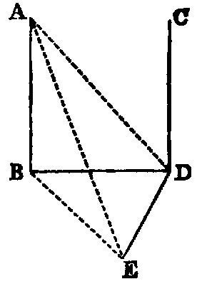
Dem.—Let AB, CD meet the plane X at the points B, D. Join BD, and in the plane X draw DE at right angles to BD; take any point E in DE. Join BE, AE, AD. Then because AB is normal to X, the angle ABE is right. Therefore AE2 = AB2 + BE2 = AB2 + BD2 + DE2; because the angle BDE is right. But AB2 + BD2 = AD2, because the angle ABD is right. Hence AE2 = AD2 + DE2. Therefore the angle ADE is right. [I. xlviii]. And since CD is normal to the plane X, DE is perpendicular to CD. Hence DE is a common perpendicular to the three concurrent lines CD, AD, BD. Therefore these lines are coplanar [XI. v.]. But AB is coplanar with AD, BD [XI. ii.]. Therefore the lines AD, BD, CD are coplanar; and since the angles ABD, BDC are right, the line AB is parallel to CD [I. xxviii.].
Def. vii.—If from every point in a given line normals be drawn to a given plane, the locus of their feet is called the projection of the given line on the plane.
Exercises.
1. The projection of any line on a plane is a right line.
2. The projection on either of two intersecting planes of a normal to the other plane is perpendicular to the line of intersection of the planes.
PROP. VII.—Theorem.
Two parallel lines (AB, CD) and any line (EF) intersecting them are coplanar.
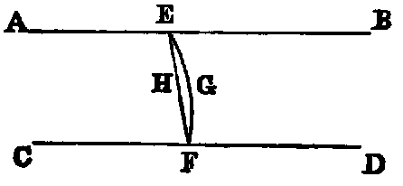
Dem.—If possible let the intersecting line be out of the plane, as EGF. And in the plane, of the parallels draw [I. Post. ii.] the right line EHF. Then we have two right lines EGF, EHF, enclosing a space, which [I. Axiom x.] is impossible. Hence the two parallel right lines and the transversal are coplanar.
Or thus: Since the points E, F are in the plane of the parallels, the line joining these points is in that plane [I. Def. vi].
PROP. VIII.—Theorem.
If one (AB) of two parallel right lines (AB, CD), be normal to a plane (X), the other line (CD) shall be normal to the same plane.
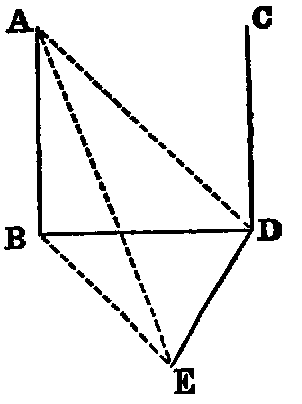
Dem.—Let AB, CD meet the plane X in the points B, D. Join BD. Then the lines AB, BD, CD are coplanar. Now in the plane X, to which AB is normal, draw DE at right angles to BD. Take any point E in DE, and join BE, AE, AD.
Then because AB is normal to the plane X, it is perpendicular to the line BE in that plane [XI. Def. vi.]. Hence the angle ABE is right; therefore AE2 = AB2 + BE2 = AB2 + BD2 + DE2 (because BDE is right (const.)) = AD2 + DE2 (because ABD is right (hyp.)). Therefore the angle ADE is right. Hence DE is at right angles both to AD and BD. Therefore [XI. iv.] DE is perpendicular to CD, which is coplanar and concurrent with AD and BD. Again, since AB and CD are parallel, the sum of the angles ABD, BDC is two right angles [I. xxix.]; but ABD is right (hyp.); therefore BDC is right. Hence CD is perpendicular to the two lines DB, DE, and therefore [XI. iv.] it is normal to their plane, that is, it is normal to X.
PROP. IX—Theorem.
Two right lines (AB, CD) which are each parallel to a third line (EF) are parallel to one another.
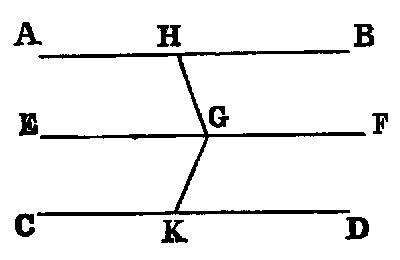
Dem.—If the three lines be coplanar, the Proposition is evidently the same as I. xxx. If they are not coplanar, from any point G in EF draw in the planes of EF, AB; EF, CD, respectively, the lines GH, GK each perpendicular to EF [I. xi.]. Then because EF is perpendicular to each of the lines GH, GK, it is normal to their plane [XI. iv.]. And because AB is parallel to EF (hyp.), and EF is normal to the plane GHK, AB is normal to the plane GHK [XI. viii.]. In like manner CD is normal to the plane HGK. Hence, since AB and CD are normals to the same plane, they are parallel to one another.
PROP. X.—Theorem.
If two intersecting right lines (AB, BC) be respectively parallel to two other intersecting right lines (DE, EF), the angle (ABC) between the former is equal to the angle (DEF) between the latter.
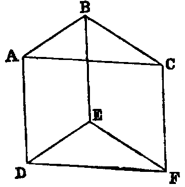
Dem.—If both pairs of lines be coplanar, the proposition is the same as I. xxix., Ex. 2. If not, take any points A, C in the lines AB, BC, and cut off ED = BA, and EF = BC [I. iii.]. Join AD, BE, CF, AC, DF. Then because AB is equal and parallel to DE, AD is equal and parallel to BE [I. xxxiii]. In like manner CF is equal and parallel to BE. Hence [XI. ix.] AD is equal and parallel to CF. Hence [I. xxxiii.] AC is equal to DF. Therefore the triangles ABC, DEF, have the three sides of one respectively equal to the three sides of the other. Hence [I. viii.] the angle ABC is equal to DEF.
Def. viii.—Two planes which meet are perpendicular to each other, when the right lines drawn in one of them perpendicular to their common section are normals to the other.
Def. ix.—When two planes which meet are not perpendicular to each other, their inclination is the acute angle contained by two right lines drawn from any point of their common section at right angles to it—one in one plane, and the other in the other.
Observation.—These definitions tacitly assume the result of Props. iii. and x. of this book. On this account we have departed from the usual custom of placing them at the beginning of the book. We have altered the place of Definition vi. for a similar reason.
PROP. XI.—Problem.
To draw a normal to a given plane (BH) from a given point (A) not in it.
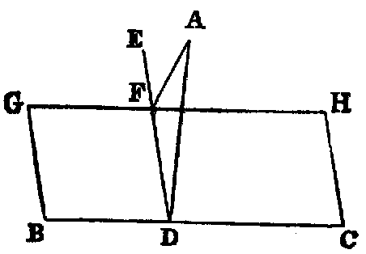
Sol.—In the given plane BH draw any line BC, and from A draw AD perpendicular to BC [I. xii.]; then if AD be perpendicular to the plane, the thing required is done. If not, from D draw DE in the plane BH at right angles to BC [I. xi.], and from A draw AF [I. xii.] perpendicular to DE. AF is normal to the plane BH.
Dem.—Draw GH parallel to BC. Then because BC is perpendicular both to ED and DA, it is normal to the plane of ED, DA [XI. iv.]; and since GH is parallel to BC, it is normal to the same plane [XI. viii.]. Hence AF is perpendicular to GH [XI. Def. vi.], and AF is perpendicular to DE (const.). Therefore AF is normal to the plane of GH and ED—that is, to the plane BH.
PROP. XII.—Problem.
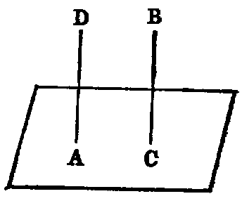
To draw a normal to a given plane from a given point (A) in the plane.
Sol.—From any point B not in the plane draw [XI. xi.] BC normal to it. If this line pass through A it is the normal required. If not, from A draw AD parallel to BC [I. xxxi.]. Then because AD and BC are parallel, and BC is normal to the plane, AD is also normal to it [XI. viii.], and it is drawn from the given point. Hence it is the required normal.
PROP. XIII.—Theorem.
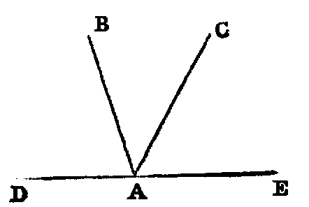
From the same point (A) there can be but one normal drawn to a given plane (X).
Dem.—1. Let A be in the given plane, and if possible let AB, AC be both normals to it, on the same side. Now let the plane of BA, AC cut the given plane X in the line DE. Then because BA is a normal, the angle BAE is right. In like manner CAE is right. Hence BAE = CAE, which is impossible.
2. If the point be above the plane, there can be but one normal; for, if there could be two, they would be parallel [XI. vi.] to one another, which is absurd. Therefore from the same point there can be drawn but one normal to a given plane.
PROP. XIV.—Theorem.
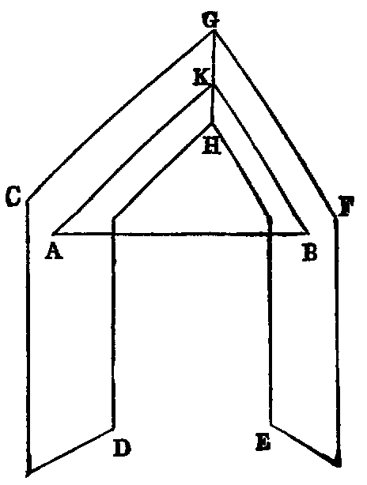
Planes (CD, EF) which have a common normal (AB) are parallel to each other.
Dem.—If the planes be not parallel, they will meet when produced. Let them meet, their common section being the line GH, in which take any point K. Join AK, BK. Then because AB is normal to the plane CD, it is perpendicular to the line AK, which it meets in that plane [XI. Def. vi.]. Therefore the angle BAK is right. In like manner the angle ABK is right. Hence the plane triangle ABK has two right angles, which is impossible. Therefore the planes CD, EF cannot meet—that is, they are parallel.
Exercises.
1. The angle between two planes is equal to the angle between two intersecting normals to these planes.
2. If a line be parallel to each of two planes, the sections which any plane passing through it makes with them are parallel.
3. If a line be parallel to each of two intersecting planes, it is parallel to their intersection.
4. If two right lines be parallel, they are parallel to the common section of any two planes passing through them.
5. If the intersections of several planes be parallel, the normals drawn to them from any point are coplanar.
PROP. XV.—Theorem.
Two planes (AC, DF) are parallel, if two intersecting lines (AB, BC) on one of them be respectively parallel to two intersecting lines (DE, EF) on the other.
Dem.—From B draw BG perpendicular to the plane DF [XI. xi.], and let it meet that plane in G. Through G draw GH parallel to ED, and GK to EF. Now, since GH is parallel to ED (const.), and AB to ED (hyp.), AB is parallel to GH [XI. ix.]. Hence the sum of the angles ABG, BGH is two right angles [I. xxix]; but BGH is right (const.); therefore ABG is right. In like manner CBG is right. Hence BG is normal to the plane AC [XI. Def. vi.], and it is normal to DF (const.). Hence the planes AC, DF have a common normal BG; therefore they are parallel to one another.
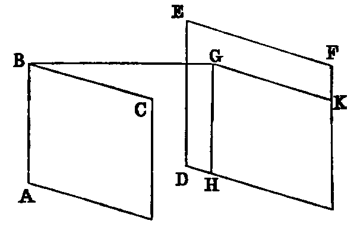
PROP. XVI.—Theorem.
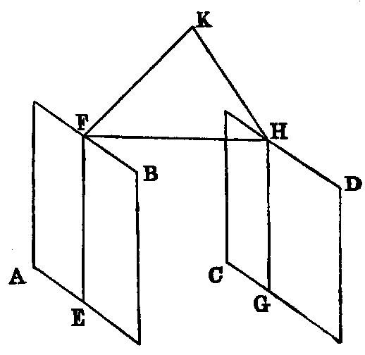
If two parallel planes (AB, CD) be cut by a third plane (EF, HG), their common sections (EF, GH) with it are parallel.
Dem.—If the lines EF, GH are not parallel, they must meet at some finite distance. Let them meet in K. Now since K is a point in the line EF, and EF is in the plane AB, K is in the plane AB. In like manner K is a point in the plane CD. Hence the planes AB, CD meet in K, which is impossible, since they are parallel. Therefore the lines EF, GH must be parallel.
Exercises.
1. Parallel planes intercept equal segments on parallel lines.
2. Parallel lines intersecting the same plane make equal angles with it.
3. A right line intersecting parallel planes makes equal angles with them.
PROP. XVII.—Theorem.
If two parallel lines (AB, CD) be cut by three parallel planes (GH, KL, MN) in two triads of points (A, E, B; C, F, D), their segments between those points are proportional.
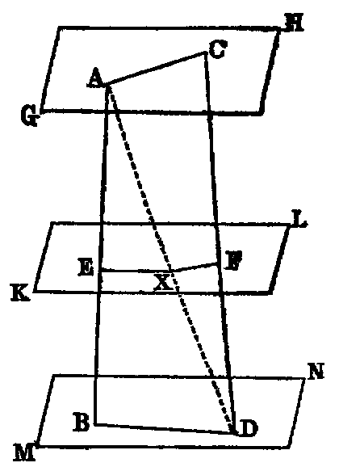
Dem.—Join AC, BD, AD. Let AD meet the plane KL in X. Join EX, XF. Then because the parallel planes KL, MN are cut by the plane ABD in the lines EX, BD, these lines are parallel [XI. xvi.]. Hence
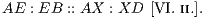
In like manner,
Therefore [V. xi.]
PROP. XVIII.—Theorem.
If a right line (AB) be normal to a plane (CI), any plane (DE) passing through it shall be perpendicular to that plane.
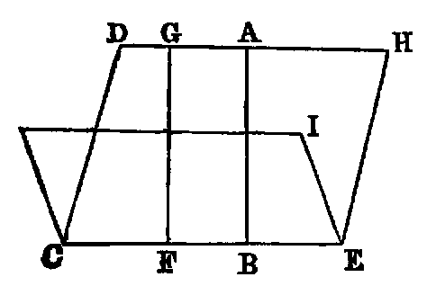
Dem.—Let CE be the common section of the planes DE, CI. From any point F in CE draw FG in the plane DE parallel to AB [I. xxxi.]. Then because AB and FG are parallel, but AB is normal, to the plane CI; hence FG is normal to it [XI. viii.]. Now since FG is parallel to AB, the angles ABF, BFG are equal to two right angles [I. xxix.]; but ABF is right (hyp.); therefore BFG is right—that is, FG is perpendicular to CE. Hence every line in the plane DE, drawn perpendicular to the common section of the planes DE, CI, is normal to the plane CI. Therefore [XI. Def. viii.] the planes DE, CI are perpendicular to each other.
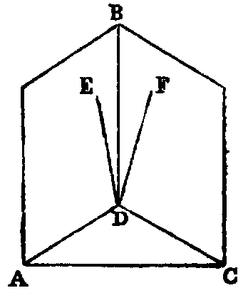
PROP. XIX.—Theorem.
If two intersecting planes (AB, BC) be each perpendicular to a third plane (ADC), their common section (BD) shall be normal to that plane.
Dem.—If not, draw from D in the plane AB the line DE perpendicular to AD, the common section of the planes AB, ADC; and in the plane BC draw BF perpendicular to the common section DC of the planes BC, ADC. Then because the plane AB is perpendicular to ADC, the line DE in AB is normal to the plane ADC [XI. Def. viii.]. In like manner DF is normal to it. Therefore from the point D there are two distinct normals to the plane ADC, which [XI. xiii.] is impossible. Hence BD must be normal to the plane ADC.
Exercises.
1. If three planes have a common line of intersection, the normals drawn to these planes from any point of that line are coplanar.
2. If two intersecting planes be respectively perpendicular to two intersecting lines, the line of intersection of the former is normal to the plane of the latter.
3. In the last case, show that the dihedral angle between the planes is equal to the rectilineal angle between the normals.
PROP. XX.—Theorem.
The sum of any two plane angles (BAD, DAC) of a trihedral angle (A) is greater than the third (BAC).
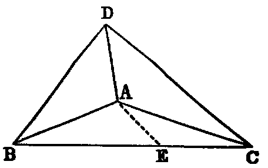
Dem.—If the third angle BAC be less than or equal to either of the other angles the proposition is evident. If not, suppose it greater: take any point D in AD, and at the point A in the plane BAC make the angle BAE equal BAD [I. xxiii.], and cut off AE equal AD. Through E draw BC, cutting AB, AC in the points B, C. Join DB, DC.
Then the triangles BAD, BAE have the two sides BA, AD in one equal respectively to the two sides BA, AE in the other, and the angle BAD equal to BAE; therefore the third side BD is equal to BE. But the sum of the sides BD, DC is greater than BC; hence DC is greater than EC. Again, because the triangles DAC, EAC have the sides DA, AC respectively equal to the sides EA, AC in the other, but the base DC greater than EC; therefore [I. xxv.] the angle DAC is greater than EAC, but the angle DAB is equal to BAE (const.). Hence the sum of the angles BAD, DAC is greater than the angle BAC.
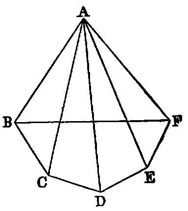
PROP. XXI.—Theorem.
The sum of all the plane angles (BAC, CAD, &c.) forming any solid angle (A) is less than four right angles.
Dem.—Suppose for simplicity that the solid angle A is contained by five plane angles BAC, CAD, DAE, EAF, FAB; and let the planes of these angles be cut by another plane in the lines BC, CD, DE, EF, FB; then we have [XI. xx.],
| ∠ABC + ABF | greater than | FBC, |
|---|---|---|
| ∠ACB + ACD | ,, | BCD, &c. |
Hence, adding, we get the sum of the base angles of the five triangles BAC, CAD, &c., greater than the sum of the interior angles of the pentagon BCDEF —that is, greater than six right angles. But the sum of the base angles of the same triangles, together with the sum of the plane angles BAC, CAD, &c., forming the solid angle A, is equal to twice as many right angles as there are triangles BAC, CAD, &c.—that is, equal to ten right angles. Hence the sum of the angles forming the solid angle is less than four right angles.
Observation.—This Prop. may not hold if the polygonal base BCDEF contain re-entrant angles.
Exercises on Book XI.
1. Any face angle of a trihedral angle is less than the sum, but greater than the difference, of the supplements of the other two face angles.
2. A solid angle cannot be formed of equal plane angles which are equal to the angles of a regular polygon of n sides, except in the case of n = 3, 4, or 5.
3. Through one of two non-coplanar lines draw a plane parallel to the other.
4. Draw a common perpendicular to two non-coplanar lines, and show that it is the shortest distance between them.
5. If two of the plane angles of a tetrahedral angle be equal, the planes of these angles are equally inclined to the plane of the third angle, and conversely. If two of the planes of a trihedral angle be equally inclined to the third plane, the angles contained in those planes are equal.
6. The three lines of intersection of three planes are either parallel or concurrent.
7. If a trihedral angle O be formed by three right angles, and A, B, C be points along the edges, the orthocentre of the triangle ABC is the foot of the normal from O on the plane ABC.
8. If through the vertex O of a trihedral angle O—ABC any line OD be drawn interior to the angle, the sum of the rectilineal angles DOA, DOB, DOC is less than the sum, but greater than half the sum, of the face angles of the trihedral.
9. If on the edges of a trihedral angle O—ABC three equal lines OA, OB, OC be taken, each of these is greater than the radius of the circle described about the triangle ABC.
10. Given the three angles of a trihedral angle, find, by a plane construction, the angles between the containing planes.
11. If any plane P cut the four sides of a Gauche quadrilateral (a quadrilateral whose angular points are not coplanar) ABCD in four points, a, b, c, d, then the product of the four ratios
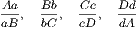
is plus unity, and conversely, if the product
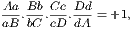
the points a, b, c, d are coplanar.
12. If in the last exercise the intersecting plane be parallel to any two sides of the quadrilateral, it cuts the two remaining sides proportionally.
Def. x.—If at the vertex O of a trihedral angle O—ABC we draw normals OA′, OB′, OC′ to the faces OBC, OCA, OAB, respectively, in such a manner that OA′ will be on the same side of the plane OBC as OA, &c., the trihedral angle O—A′B′C′ is called the supplementary of the trihedral angle O—ABC.
13. If O—A′B′C′ be the supplementary of O—ABC, prove that O—ABC is the supplementary of O—A′B′C′.
14. If two trihedral angles be supplementary, each dihedral angle of one is the supplement of the corresponding face angle of the other.
15. Through a given point draw a right line which will meet two non-coplanar lines.
16. Draw a right line parallel to a given line, which will meet two non-coplanar lines.
17. Being given an angle AOB, the locus of all the points P of space, such that the sum of the projections of the line OP on OA and OB may be constant, is a plane.
APPENDIX.
PRISM, PYRAMID, CYLINDER, SPHERE, AND CONE
________________
DEFINITIONS.
i. A polyhedron is a solid figure contained by plane figures: if it be contained by four plane figures it is called a tetrahedron; by six, a hexahedron; by eight, an octahedron; by twelve, a dodecahedron; and if by twenty, an icosahedron.
ii. If the plane faces of a polyhedron be equal and similar rectilineal figures, it is called a regular polyhedron.
iii. A pyramid is a polyhedron of which all the faces but one meet in a point. This point is called the vertex; and the opposite face, the base.
iv. A prism is a polyhedron having a pair of parallel faces which are equal and similar rectilineal figures, and are called its ends. The others, called its side faces, are parallelograms.
v. A prism whose ends are perpendicular to its sides is called a right prism; any other is called an oblique prism.
vi. The altitude of a pyramid is the length of the perpendicular drawn from its vertex to its base; and the altitude of a prism is the perpendicular distance between its ends.
vii. A parallelopiped is a prism whose bases are parallelograms. A parallelopiped is evidently a hexahedron.
viii. A cube is a rectangular parallelopiped, all whose sides are squares.
ix. A cylinder is a solid figure formed by the revolution of a rectangle about one of its sides, which remains fixed, and which is called its axis. The circles which terminate a cylinder are called its bases or ends.
x. A cone is the solid figure described by the revolution of a right-angled triangle about one of the legs, which remains fixed, and which is called the axis. The other leg describes the base, which is a circle.
xi. A sphere is the solid described by the revolution of a semicircle about a diameter, which remains fixed. The centre of the sphere is the centre of the generating semicircle. Any line passing through the centre of a sphere and terminated both ways by the surface is called a diameter.
PROP. I.—Theorem.
Right prisms (ABCDE–FGHIJ, A′B′C′D′E′–F′G′H′I′J′) which have bases (ABCDE, A′B′C′D′E′) that are equal and similar, and which have equal altitudes, are equal.
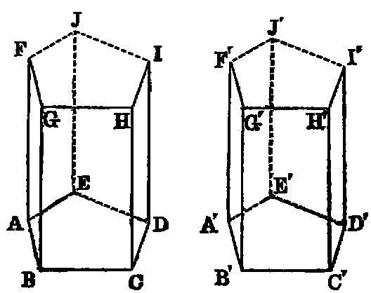
Dem.—Apply the bases to each other; then, since they are equal and similar figures, they will coincide—that is, the point A with A′, B with B′, &c. And since AF is equal to A′F′, and each is normal to its respective base, the: point F will coincide with F′. In the same manner the points G, H, I, J will coincide respectively with the points G′, H′, I′, J′. Hence the prisms are equal in every respect.
Cor. 1.—Right prisms which have equal bases (EF, E′F′) and equal altitudes are equal in volume.
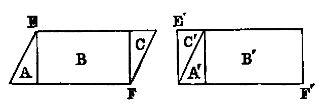
Dem.—Since the bases are equal, but not similar, we can suppose one of them, EF, divided into parts A, B, C, and re-arranged so as to make them coincide with the other [I. xxxv., note]; and since the prism on E′F′ can be subdivided in the same manner by planes perpendicular to the base, the proposition is evident.
Cor. 2.—The volumes of right prisms (X, Y ) having equal bases are proportional to their altitudes.
For, if the altitudes be in the ratio of m : n, X can be divided into m prisms of equal altitudes by planes parallel to the base; then these m prisms will be all equal. In like manner, Y can be divided into n equal prisms. Hence X : Y :: m : n.
Cor. 3.—In right prisms of equal altitudes the volumes are to one another as the areas of their bases. This may be proved by dividing the bases into parts so that the subdivisions will be equal, and then the volumes proportional to the number of subdivisions in their respective bases, that is, to their areas.
Cor. 4.—The volume of a rectangular parallelopiped is measured by the continued product of its three dimensions.
PROP. II.—Theorem.
Parallelopipeds (ABCD–EFGH, ABCD–MNOP), having a common base (ABCD) and equal altitudes, are equal.
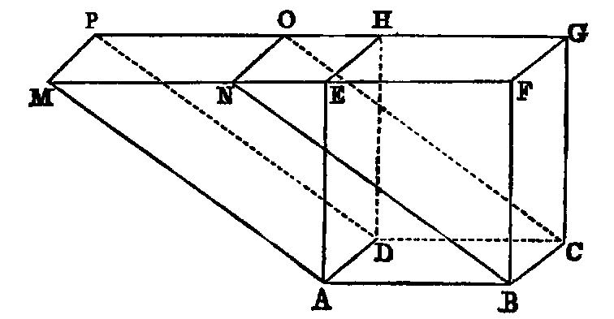
1∘. Let the edges MN, EF be in one right line; then GH, OP must be in one right line. Now EF = MN, because each equal AB; therefore ME = NF; therefore the prisms AEM–DHP, and BFN–CGO, have their triangular bases AEM, BFN identically equal, and they have equal altitudes; hence they are equal; and supposing them taken away from the entire solid, the remaining parallelopipeds ABCD–EFGH, ABCD–MNOP are equal.
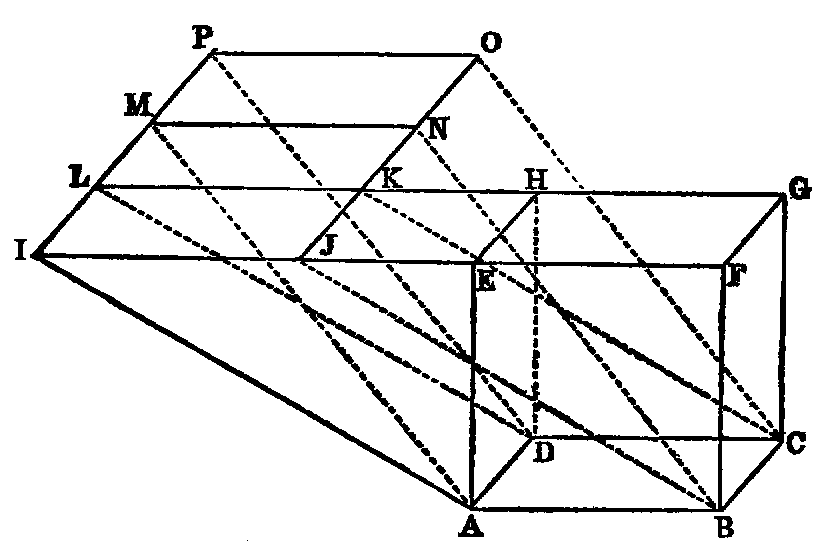
2∘. Let the edges EF, MN be in different lines; then produce ON, PM to meet the lines EF and GH produced in the points J, K, L, I. Then by 1∘ the parallelopipeds ABCD–EFGH, ABCD–MNOP are each equal to the parallelopiped ABCD–IJKL. Hence they an equal to one another.
Cor.—The volume of any parallelopiped is equal to the product of its base and altitude.
PROP. III.—Theorem.
A diagonal plane of a parallelopiped divides it into two prisms of equal volume.
1∘. When the parallelopiped is rectangular the proposition is evident.
2∘. When it is any parallelopiped, ABCD–EFGH, the diagonal plane bisects it.
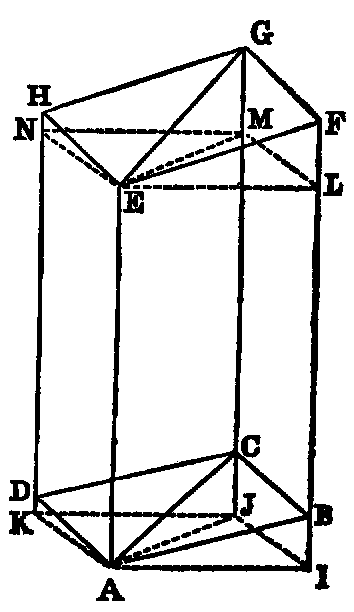
Dem.—Through the vertices A, E let planes be drawn perpendicular to the edges and cutting them in the points I, J, K; L, M, N, respectively. Then [I. xxxiv.] we have IL = BF, because each is equal to AE. Hence IB = LF. In like manner JC = MG. Hence the pyramid A–IJCB agrees in everything but position with E–LMGF; hence it is equal to it in volume. To each add the solid ABC–LME, and we have the prism AIJ–ELM equal to the prism ABC–EFG. In like manner AJK–EMN = ACD–EGH; but (1∘) the prism AIJ–ELM = AJK–EMN. Hence ABC–EFG = ACD–EGH. Therefore the diagonal plane bisects the parallelopiped.
Cor. 1.—The volume of a triangular prism is equal to the product of its base and altitude; because it is half of a parallelopiped, which has a double base and equal altitude.
Cor. 2.—The volume of any prism is equal to the product of its base and altitude; because it can be divided into triangular prisms.
PROP. IV.—Theorem.
If a pyramid (O–ABCDE) be cut by any plane (abcde) parallel to the base, the section is similar to the base.
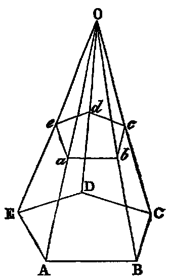
Dem.—Because the plane AOB cuts the parallel planes ABCDE, abcde, the sections AB, ab are parallel [XI. xvi.] In like manner BC, bc are parallel. Hence the angle ABC = abc [XI. x.]. In like manner the remaining angles of the polygon ABCDE are equal to the corresponding angles of abcde. Again, because ab is parallel to AB, the triangles ABO, abO are equiangular.
| Hence | AB | : BO :: ab : bO. [VI. iv.] | |||||||||
|---|---|---|---|---|---|---|---|---|---|---|---|
| In like manner | BO | : BC :: bO : bc; | |||||||||
| therefore | AB | : BC :: ab : bc. [Ex æquali.] | |||||||||
| In like manner | BC | : CD :: bc : cd, &c. |
Therefore the polygons ABCDE, abcde are equiangular, and have the sides about their equal angles proportional. Hence they are similar.
Cor. 1.—The edges and the altitude of the pyramid are similarly divided by the parallel plane.
Cor. 2.—The areas of parallel sections are in the duplicate ratio of the distances of their planes from the vertex.
Cor. 3.—In any two pyramids, sections parallel to their bases, which divide their altitudes in the same ratio, are proportional to their bases.
PROP. V.—Theorem.
Pyramids (P–ABCD, p–abc), having equal altitudes (PO, po) and bases (ABCD, abc) of equal areas, have equal volumes.
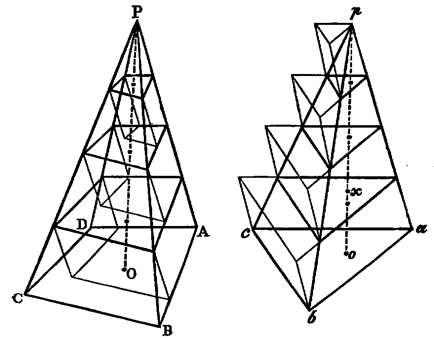
Dem.—If they be not equal in volume, let abc be the base of the greater; and let ox be the altitude of a prism, with an equal base, and whose volume is equal to their difference; then let the equal altitudes PO, po be divided into such a number of equal parts, by planes parallel to the bases of the pyramids, that each part shall be less than ox. Then [iv. Cor. 3] the sections made by these planes will be equal each to each. Now let prisms be constructed on these sections as bases and with the equal parts of the altitudes of the pyramids as altitudes, and let the prisms in P–ABCD be constructed below the sections, and in p–abc, above. Then it is evident that the sum of the prisms in P–ABCD is less than that pyramid, and the sum of those on the sections of p–abc greater than p–abc. Therefore the difference between the pyramids is less than the difference between the sums of the prisms, that is, less than the lower prism in the pyramid p–abc; but the altitude of this prism is less than ox (const.). Hence the difference between the pyramids is less than the prism whose base is equal to one of the equal bases, and whose altitude is equal to ox, and the difference is equal to this prism (hyp.), which is impossible. Therefore the volumes of the pyramids are equal.
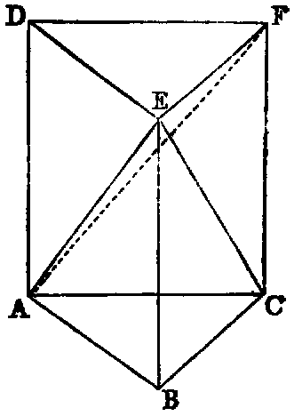
Cor. 1.—The volume of a triangular pyramid E–ABC is one third the volume of the prism ABC–DEF, having the same base and altitude.
For, draw the plane EAF, then the pyramids E–AFC, E–AFD are equal, having equal bases AFC, AFD, and a common altitude; and the pyramids E–ABC, F–ABC are equal, having a common base and equal altitudes. Hence the pyramid E–ABC is one of three equal pyramids into which the prism is divided. Therefore it is one third of the prism.
Cor. 2.—The volume of every pyramid is one-third of the volume of a prism having an equal base and altitude.
Because it may be divided into triangular pyramids by planes through the vertex and the diagonals of the base.
PROP. VI.—Theorem.
The volume of a cylinder is equal to the product of the area of its base by its altitude
.
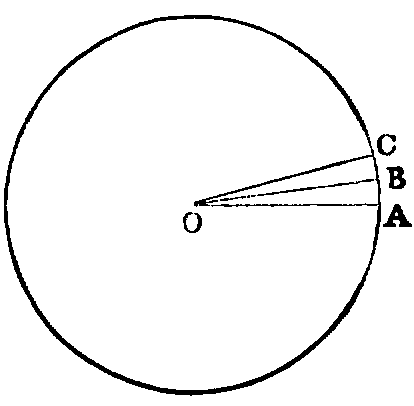
Dem.—Let O be the centre of its circular base; and take the angle AOB indefinitely small, so that the arc AB may be regarded as a right line. Then planes perpendicular to the base, and cutting it in the lines OA, OB, will be faces of a triangular prism, whose base will be the triangle AOB, and whose altitude will be the altitude of the cylinder. The volume of this prism will be equal to the area of the triangle AOB by the height of the cylinder. Hence, dividing the circle into elementary triangles, the cylinder will be equal to the sum of all the prisms, and therefore its volume will be equal to the area of the base multiplied by the altitude.
Cor. 1.—If r be the radius, and h the height of the cylinder,
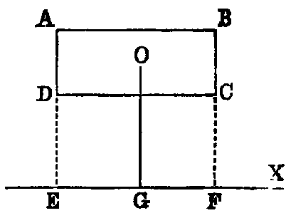
Cor. 2.—If ABCD be a rectangle; X a line in its plane parallel to the side AB; O the middle point of the rectangle; the volume of the solid described by the revolution of ABCD round X is equal to the area of ABCD multiplied by the circumference of the circle described by O.
Dem.—Produce the lines AD, BC to meet X in the points E, F. Then when the rectangle revolves round X, the rectangles ABFE, DCFE will describe cylinders whose bases will be circles having AE, DE as radii, and whose common altitude will be AB. Hence the difference between the volumes of these cylinders will be equal to the differences between the areas of the bases multiplied by AB, that is = π(AE2 − DE2).AB. Therefore the volume described by ABCD
| = π.AB.(AE + DE)(AE − DE); | |||||||||||
|---|---|---|---|---|---|---|---|---|---|---|---|
| but | AE + DE | = 2OG, and AE − DE = AD. |
Hence volume described by the rectangle ABCD
= 2π.OG.AB.AD.
= rectangle ABCD multiplied by the circumference of the circle described by its middle point O.
Observation.—This Cor. is a simple case of Guldinus’s celebrated theorem. By its assistance we give in the two following corollaries original methods of finding the volumes of the cone and sphere, and it may be applied with equal facility to the solution of several other problems which are usually done by the Integral Calculus.
Cor. 3.—The volume of a cone is one-third the volume of a cylinder having the same base and altitude.
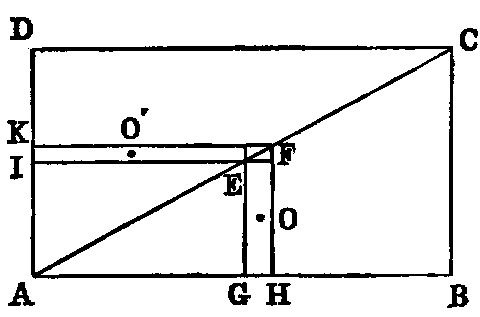
Dem.—Let ABCD be a rectangle whose diagonal is AC. The triangle ABC will describe a cone, and the rectangle a cylinder by revolving round AB. Take two points E, F infinitely near each other in AC, and form two rectangles, EH, EK, by drawing lines parallel to AD, AB. Now if O, O′ be the middle points of these rectangles, it is evident that, when the whole figure revolves round AB, the circumference of the circle described by O′ will ultimately be twice the circumference of the circle described by O; and since the parallelogram EK is equal to EH [I. xliii.], the solid described by EK (Cor. 1) will be equal to twice the solid described by EH. Hence, if AC be divided into an indefinite number of equal parts, and rectangles corresponding to EH, EK be inscribed in the triangles ABC, ADC, the sum of the solids described by the rectangles in the triangle ADC is equal to twice the sum of the solids described by the rectangles in the triangle ABC—that is, the difference between the cylinder and cone is equal to twice the cone. Hence the cylinder is equal to three times the cone.
Or thus: We may regard the cone and the cylinder as limiting cases of a pyramid and prism having the same base and altitude; and since (v. Cor. 2) the volume of a pyramid is one-third of the volume of a prism, having the same base and altitude, the volume of the cone is one-third of the volume of the cylinder.
Cor. 4.—If r be the radius of the base of a cone, and h its height,
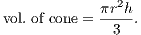
Cor. 5.—The volume of a sphere is two-thirds of the volume of a circumscribed cylinder.
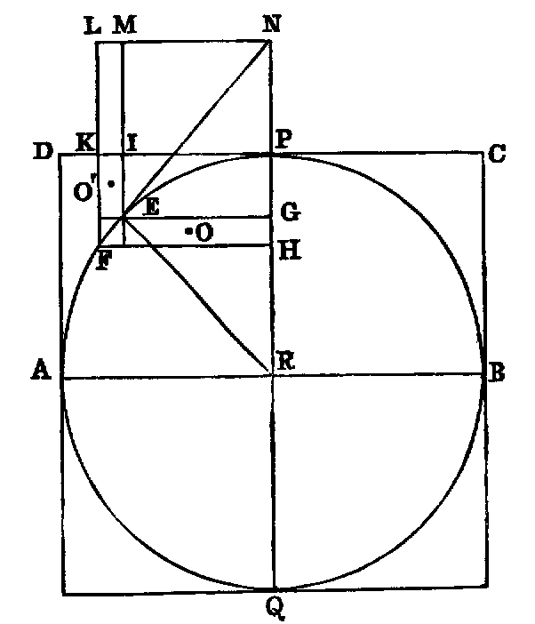
Dem.—Let AB be the diameter of the semicircle which describes the sphere; ABCD the rectangle which describes the cylinder. Take two points E, F indefinitely near each other in the semicircle. Join EF, which will be a tangent, and produce it to meet the diameter PQ perpendicular to AB in N. Let R be the centre. Join RE; draw EG, FH, NL parallel to AB; and EI, FK parallel to PQ; and produce to meet LN in M and L; and let O, O′ be the middle points of the rectangles EH, EK.
Now the rectangle NG.GR = PG.GQ, because each is equal to GE2. Hence NG : GP :: GQ : GR, or ME : IE :: RP + RG : RG. Now, denoting the radii of the circles described by the points O, O′ by ρ, ρ′ respectively, we have ultimately ρ = GR and ρ′ = (RP + RG). Hence ME : IE :: 2ρ′ : ρ; but ME : IE :: rectangle EL : rectangle EK :: [I. xliii.] EH : EK;
| ∴ EH : EK :: 2ρ′ : ρ; | |||
|---|---|---|---|
| ∴ 2πρ.EH = 2(2πρ′.EK). |
Hence the solid described by EH equal twice the solid described by EK. Therefore we infer, as in the last Cor., that the whole volume of the sphere is equal to twice the difference between the cylinder and sphere. Therefore the sphere is two-thirds of the cylinder.
Cor. 6.—If r be the radius of a sphere,
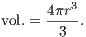
PROP. VII.—Theorem.
The surface of a sphere is equal to the convex surface of the circumscribed cylinder.
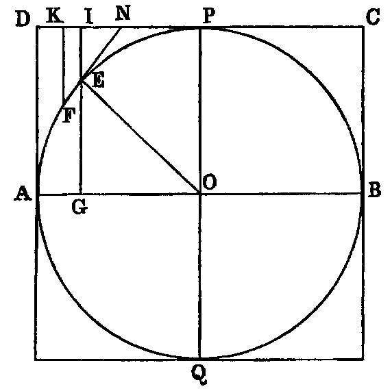
Dem.—Let AB be the diameter of the semicircle which describes the sphere. Take two points, E, F, indefinitely near each other in the semicircle. Join EF, and produce to meet the tangent CD parallel to AB in N. Draw EI, FK parallel to PQ. Produce EI to meet AB in G. Let O be the centre. Join OE.
| Now we have | FE : KI :: EN : | IN [VI. ii.]; | |||||||||
|---|---|---|---|---|---|---|---|---|---|---|---|
| but | EN : IN :: | OE : EG, |
because the triangles ENI and OEG are similar.
| Hence | FE : KI :: | OE : EG; | |||||||||
|---|---|---|---|---|---|---|---|---|---|---|---|
| but | OE = | IG. |
Hence EF : IK :: IG : EG; and IG : EG :: circumference of circle described by the point I : circumference of circle described by the point E. Hence the rectangle contained by EF, and circumference of circle described by E is equal to the rectangle contained by IK, and circumference of circle described by I—that is, the portion of the spherical surface described by EF is equal to the portion of the cylindrical surface described by IK. Hence it is evident, if planes be drawn perpendicular to the diameter AB—that the portions of cylindrical and spherical surface between any two of them are equal. Hence the whole spherical surface is equal to the cylindrical surface described by CD.
Or thus: Conceive the whole surface of the sphere divided into an indefinitely great number of equal parts, then it is evident that each of these may be regarded as the base of a pyramid having the centre of the sphere as a common vertex. Therefore the volume of the sphere is equal to the whole area of the surface multiplied by one-third of the radius. Hence if S denote the surface, we have
| S × | = 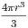 [vi., Cor. 6]; |
||||||||||
|---|---|---|---|---|---|---|---|---|---|---|---|
| therefore | S | = 4πr2. |
That is, the area of the surface of a sphere is equal four times the area of one of its great circles.
Exercises.
1. The convex surface of a cone is equal to half the rectangle contained by the circumference of the base and the slant height.
2. The convex surface of a right cylinder is equal to the rectangle contained by the circumference of the base and the altitude.
3. If P be a point in the base ABC of a triangular pyramid O–ABC, and if parallels to the edges OA, OB, OC, through P, meet the faces in the points a, b, c, the sum of the ratios
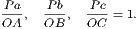
4. The volume of the frustum of a cone, made by a plane parallel to the base, is equal to the sum of the three cones whose bases are the two ends of the frustum, and the circle whose diameter is a mean proportional between the end diameters, and whose common altitude is equal to one-third of the altitude of the frustum.
5. If a point P be joined to the angular points A, B, C, D of a tetrahedron, and the joining lines, produced if necessary, meet the opposite faces in a, b, c, d, the sum of the ratios
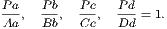
6. The surface of a sphere is equal to the rectangle by its diameter, and the circumference of a great circle.
7. The surface of a sphere is two thirds of the whole surface of its circumscribed cylinder.
8. If the four diagonals of a quadrangular prism be concurrent, it is a parallelopiped.
9. If the slant height of a right cone be equal to the diameter of its base, its total surface is to the surface of the inscribed sphere as 9 : 4.
10. The middle points of two pairs of opposite edges of a triangular pyramid are coplanar, and form a parallelogram.
11. If the four perpendiculars from the vertices on the opposite faces of a pyramid ABCD be concurrent, then
12. Every section of a sphere by a plane is a circle.
13. The locus of the centres of parallel sections is a diameter of the sphere.
14. If any number of lines in space pass through a fixed point, the feet of the perpendiculars on them from another fixed point are homospheric.
15. Extend the property of Ex. 4 to the pyramid.
16. The volume of the ring described by a circle which revolves round a line in its plane is equal to the area of the circle, multiplied by the circumference of the circle described by its centre.
17. Any plane bisecting two opposite edges of a tetrahedron bisects its volume.
18. Planes which bisect the dihedral angles of a tetrahedron meet in a point.
19. Planes which bisect perpendicularly the edges of a tetrahedron meet in a point.
20. The volumes of two triangular pyramids, having a common solid angle, are proportional to the rectangles contained by the edges terminating in that angle.
21. A plane bisecting a dihedral angle of a tetrahedron divides the opposite edge into portions proportional to the areas containing that edge.
22. The volume of a sphere: the volume of the circumscribed cube as π : 6.
23. If h be the height, and ρ the radius of a segment of a sphere, its volume is
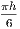
(h2 + 3ρ2).24. If h be the perpendicular distance between two parallel planes, which cut a sphere in sections whose radii are ρ1, ρ2, the volume of the frustum is  .
.
25. If δ be the distance of a point P from the centre of a sphere whose radius is R, the sum of the squares of the six segments at three rectangular chords passing through P is = 6R2 − 2δ2.
26. The volume of a sphere : the volume of an inscribed cube as π : 2.
27. If O–ABC be a tetrahedron whose angles AOB, BOC, COA are right, the square of the area of the triangle ABC is equal to the sum of the squares of the three other triangular faces.
28. In the same case, if p be the perpendicular from O on the face ABC,
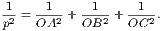
29. If h be the height of an æronaut, and R the radius of the earth, the extent of surface visible =
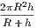
.30. If the four sides of a gauche quadrilateral touch a sphere, the points of contact are concyclic.
NOTES.
_____
NOTE A.
MODERN THEORY OF PARALLEL LINES.
In every plane there is one special line called the line at infinity. The point where any other line in the plane cuts the line at infinity is called the point at infinity in that line. All other points in the line are called finite points. Two lines in the plane which meet the line at infinity in the same point are said to have the same direction, and two lines which meet it in different points to have different directions. Two lines which have the same direction cannot meet in any finite point [I. Axiom x.], and are parallel. Two lines which have different directions must intersect in some finite point, since, if produced, they meet the line at infinity in different points. This is a fundamental conception in Geometry, it is self-evident, and may be assumed as an Axiom (see Observations on the Axioms, Book I.). Hence we may infer the following general proposition:—“Any two lines in the same plane must meet in some point in that plane; that is—(1) at infinity, when the lines have the same direction; (2) in some finite point, when they have different directions.”—See Poncelet, Propriétés Projectives, page 52.
________________
NOTE B.
legendre’s and hamilton’s proofs of euclid, I. xxxii.
The discovery of the Proposition that “the sum of the three angles of a triangle is equal to two right angles” is attributed to Pythagoras. Until modern times no proof of it, independent of the theory of parallels, was known. We shall give here two demonstrations, each independent of that theory. These are due to two of the greatest mathematicians of modern times—one, the founder of the Theory of Elliptic Functions; the other, the discoverer of the Calculus of Quaternions.
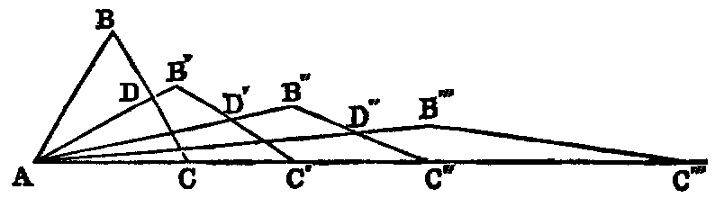
Legendre’s Proof.—Let ABC be a triangle, of which the side AC is the greatest. Bisect BC in D. Join AD. Then AD is less than AC [I. xix. Ex. 5]. Now, construct a new triangle AB′C′, having the side AC′ = 2AD, and AB′ = AC. Again, bisect B′C′ in D′, and form another triangle AB′′C′′, having AC′′ = 2AD′, and AB′′ = AC′, &c. (1) The sum of the angles of the triangle ABC = the sum of the angles of AB′C′ [I. xvi. Cor. 1] = the sum of the angles of AB′′C′′ = the sum of the angles of AB′′′C′′′, &c. (2) The angle B′AC′ is less than half BAC; the angle B′′AC′′ is less than half B′AC′, and so on; hence the angle B(n)A(n) will ultimately become infinitely small. (3) The sum of the base angles of any triangle of the series is equal to the angle of the preceding triangle (see Dem. I. xvi.). Hence, if the annexed diagram represent the triangle AB(n+1)C(n+1), the sum of the base angles A and C(n+1) is
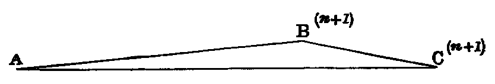
equal to the angle B(n)C(n); and when n is indefinitely large, this angle is an infinitesimal; hence the point B(n+1) will ultimately be in the line AC, and the angle AB(n+1)C(n+1) will become a straight angle [I. Def. x.], that is, it is equal to two right angles; but the sum of the angles of AB(n+1)C(n+1) is equal to the sum of the angles ABC. Hence the sum of the three angles of ABC is equal to two right angles.
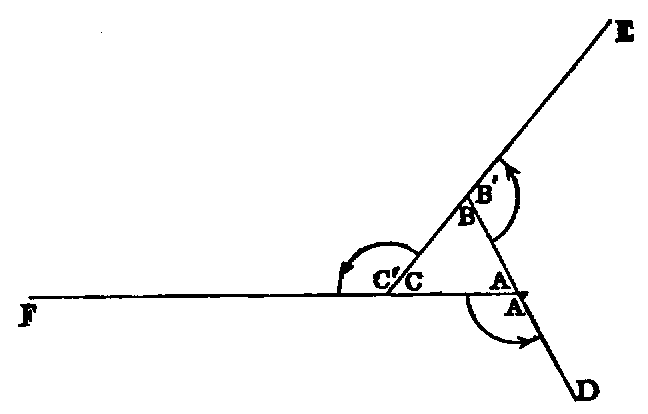
Hamilton’s Quaternion Proof.—Let ABC be the triangle. Produce BA to D, and make AD equal to AC. Produce CB to E, and make BE equal to BD; finally, produce AC to F, and make CF equal to CE. Denote the exterior angles thus formed by A′, B′, C′. Now let the leg AC of the angle A′ be turned round the point A through the angle A′; then the point C will coincide with D. Again, let the leg BD of the angle B′ be turned round the point B through the angle B′, until BD coincides with BE; then the point D will coincide with E. Lastly, let CE be turned round C, through the angle C′, until CE coincides with CF, and the point E with F. Now, it is evident that by these rotations the point C has been brought successively into the positions D, E, F; hence, by a motion of mere translation along the line FC, the line CA can be brought into its former position. Therefore it follows, since rotation is independent of translation, that the amount of the three rotations is equal to one complete revolution round the point A; therefore A′ + B′ + C′ = four right angles; but
| A + A′ + B + B′ + C + C′ | = six right angles [I. xiii.]; | ||||||||||
|---|---|---|---|---|---|---|---|---|---|---|---|
| hence | A + B + C | = two right angles. |
Observation.—The foregoing demonstration is the most elementary that was ever given of this celebrated Proposition. I have reduced it to its simplest form, and without making any use of the language of Quaternions. The same method of proof will establish the more general Proposition, that the sum of the external angles of any convex rectilineal figure is equal to four right angles.
Mr. Abbott, f.t.c.d., has informed me that this demonstration was first given by Playfair in 1826, so that Hamilton was anticipated. It has been objected to on the ground that, applied verbatim to a spherical triangle, it would lead to the conclusion that the sum of the angles is two right angles, which being wrong, proves that the method is not valid. A slight consideration will show that the cases are different. In the proof given in the text there are three motions of rotation, in each of which a point describes an arc of a circle, followed by a motion of translation, in which the same point describes a right line, and returns to its original position. On the surface of a sphere we should have, corresponding to these, three motions of rotation, in each of which the point would describe an arc of a circle, followed by a motion of rotation about the centre of the sphere, in which the point should describe an arc of a great circle to return to its original position. Hence, the proof for a plane triangle cannot be applied to a spherical triangle.
________________
NOTE C.
to inscribe a regular polygon of seventeen sides in a circle.
Analysis.—Let A be one of the angular points, AO the diameter, A1, A2, … A8 the vertices at one side of AO. Produce OA3 to M, and OA2 to P, making A3M = OA5, and A2P = OA8. Again, cut off A6N = OA7, and A1Q = OA4. Lastly, cut off OR = ON, and OS = OQ. Then we have [IV. Ex. 40],
| ρ1ρ4 = R(ρ3 + ρ5) | = R.OM, | |||||
|---|---|---|---|---|---|---|
| ρ2ρ8 = R(ρ6 − ρ7) | = R.ON; | |||||
| but | ρ1ρ2ρ4ρ8 = | R4 | [IV. Ex. 34]; | |||
| therefore | OM.ON = | R2 | (1). | |||
| In like manner, | OP.OQ = | R2 | (2). |
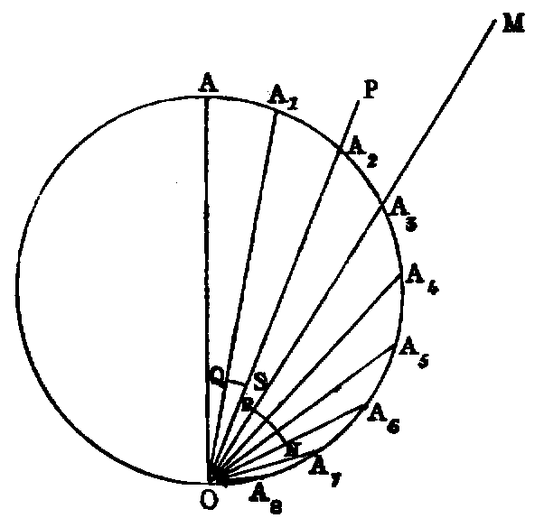
| Again, | OM.ON | = (ρ3 + ρ5)(ρ6 − ρ7) | |||||
|---|---|---|---|---|---|---|---|
| = ρ3ρ6 + ρ5ρ6 − ρ3ρ7 − ρ5ρ7 | |||||||
| = R(ρ3 − ρ8) + R(ρ1 − ρ6) − R(ρ2 − ρ7) − R(ρ2 − ρ5) [IV. Ex. 40]. | |||||||
| = R(OM − ON − OP + OQ) = R(MR − PS) : | |||||||
| MR − PS = R. | |||||||
| Again, | MR.PS | = (OM − ON)(OP − OQ) | |||||
| = (ρ3 + ρ5 − ρ6 + ρ7)(ρ2 + ρ8 − ρ1 + ρ4); |
and performing the multiplication and substituting, we get
Hence, the rectangle and the difference of the lines MR and PS being given, each is given; hence MR is given; but MR = OM − ON; therefore OM − ON is given; and we have proved that the rectangle OM.ON = R2; therefore OM and ON are each given. In like manner, OP and OQ are each given.
Again,
Hence, since OQ and ON are each given, ρ6 and ρ7 are each given; therefore we can draw these chords, and we have the arc A6A7 between their extremities given; that is, the seventeenth part of the circumference of a circle. Hence the problem is solved.
The foregoing analysis is due to Ampere: see Catalan, Théorèmes et Problèmes de Géométrie Elémentaire. We have abridged and simplified Ampere’s solution.
________________
NOTE D.
to find two mean proportionals between two given lines.
The problem to find two mean proportionals is one of the most celebrated in Geometry on account of the importance which the ancients attached to it. It cannot be solved by the line and circle, but is very easy by Conic Sections. The following is a mechanical construction by the Ruler and Compass.
Sol.—Let the extremes AB, BC be placed at right angles to each other; complete the rectangle ABCD, and describe a circle about it. Produce DA, DC, and let a graduated ruler be made to revolve round the point B, and so adjusted that BE shall be equal to GF; then AF, CE are two mean proportionals between AB, BC.
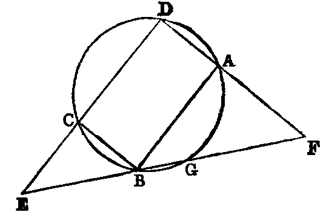
Dem.—Since BE is equal to GF, the rectangle BE.GE = BF.GF. Therefore DE.CE = DF.AF; hence DE : DF :: AF : CE; and by similar triangles, AB : AF :: DE : DF, and CE : CB :: DE : DF. Hence AB : AF :: AF : CE; and AF : CE :: CE : CB. Therefore AB, AF, CE, CB are continual proportions. Hence [VI. Def. iv.] AF, CE are two mean proportionals between AB and BC.
The foregoing elegant construction is due to the ancient Geometer Philo of Byzantium. If we join DG it will be perpendicular to EF. The line EF is called Philo’s Line; it possesses the remarkable property of being the minimum line through the point B between the fixed lines DE, DF.
Newton’s Construction.—Let AB and L be the two given lines of which AB is the greater. Bisect AB in C. With A as centre and AC as radius, describe a circle, and in it place the chord CD equal to the second line L. Join BD, and draw by trial through A a line meeting BD, CD produced in the points E, F, so that the intercept EF will be equal to the radius of the circle. DE and FA are the mean proportionals required.
Dem.—Join AD. Since the line BF cuts the sides of the △ ACE, we have
| AB.CD.EF | = CB.DE.FA; but EF = CB; | ||||||||||
|---|---|---|---|---|---|---|---|---|---|---|---|
| therefore | AB.CD | = DE.FA, or = . |
Again, since the △ ACD is isosceles, we have
| ED.EC | = EA2 − AC2 = (FA + AC)2 − AC2 | ||
|---|---|---|---|
| = 2FA.AC + FA2 = FA.AB + FA2. |
Hence ED(ED + CD) = FA(AB + FA),
or DE2 = FA.AB,
therefore DE2 = FA.AB, and we have AB.CD = DE.FA.
Hence AB, DE, FA, CD are in continued proportion.
________________
NOTE E.
on philo’s line.
I am indebted to Professor Galbraith for the following proof of the minimum property of Philo’s Line. It is due to the late Professor Mac Cullagh:—Let AC, CB be two given lines, E a fixed point, CD a perpendicular on AB; it is required to prove, if AE is equal to DB, that AB is a minimum.
Dem.—Through E draw EM parallel to BC; make EN = EM; produce AB until EP = AB. Through the points N, P draw NT, RP each parallel to AC, and through P draw PQ parallel to BC. It is easy to see from the figure that the parallelogram QR is equal to the parallelogram MF, and is therefore given. Through P draw ST perpendicular to EP. Now, since AE = DB, BP is equal to DB; therefore PS = CD. Again, since OP = AD, PT is equal to CD; therefore PS = PT. Hence QR is the maximum parallelogram in the triangle SV T.
Again, if any other line A′B be drawn through E, and produced to P′, so that EP′ = AP′, the point P′ must fall outside ST, because the parallelogram Q′R′, corresponding to QR, will be equal to MF, and therefore equal to QR. Hence the line EP′ is greater than EP, or A′B′ is greater than AB. Hence AB is a minimum.
________________
NOTE F.
on the trisection of an angle.
The following mechanical method of trisecting an angle occurred to me several years ago. Apart from the interest belonging to the Problem, it is valuable to the student as a geometrical exercise:—
To trisect a given angle ACB.
Sol.—Erect CD perpendicular to CA; bisect the angle BCD by CG, and make the angle ECI equal half a right angle; it is evident that CI will fall between CB and CA. Then, if we use a jointed ruler—that is two equal rulers connected by a pivot—and make CB equal to the length of one of these rulers, and, with C as centre and CB as radius, describe the circle BAM, cutting CI in I: at I draw the tangent IG, cutting CG in G.
Then, since ICG is half a right angle, and CIG is right, IGC is half a right angle; therefore IC is equal to IG; but IC equal CB; therefore IG = CB—equal length of one of the two equal rulers. Hence, if the rulers be opened out at right angles, and placed so that the pivot will be at I, and one extremity at C, the other extremity at G; it is evident that the point B will be between the two rulers; then, while the extremity at C remains fixed, let the other be made to traverse the line GF, until the edge of the second ruler passes through B: it is plain that the pivot moves along the circumference of the circle. Let CH, HF, be the positions of the rulers when this happens; draw the line CH; the angle ACH is one-third of ACB.
Dem.—Produce BC to M. Join HM. Erect BO at right angles to BM. Then, because CH = HF, the angle HCF = HFC, and the angle DCE = ECB (const.). Hence the angle HCD = HBC [I. xxxii.], and the right angles ACD, CBO are equal; therefore the angle ACH is equal to HBO; that is [III. xxxii.], equal to HMB, or to half the angle HCB. Hence ACH is one-third of ACB.
________________
NOTE G.
on the quadrature of the circle.
Modern mathematicians denote the ratio of the circumference of a circle to its diameter by the symbol π. Hence, if r denote the radius, the circumference will be 2πr; and, since the area of a circle [VI. xx. Ex. 15] is equal to half the rectangle contained by the circumference and the radius, the area will be πr2. Hence, if the area be known, the value of π will be known; and, conversely, if the value of π be known, the area is known. On this account the determination of the value of π is called “the problem of the quadrature of the circle,” and is one of the most celebrated in Mathematics. It is now known that the value of π is incommensurable; that is, that it cannot be expressed as the ratio of any two whole numbers, and therefore that it can be found only approximately; but the approximation can be carried as far as we please, just as in extracting the square root we may proceed to as many decimal places as may be required. The simplest approximate value of π was found by Archimedes, namely, 22 : 7. This value is tolerably exact, and is the one used in ordinary calculations, except where great accuracy is required. The next to this in ascending order, viz. 355 : 113, found by Vieta, is correct to six places of decimals. It differs very little from the ratio 3.1416 : 1, given in our elementary books.
Several expeditious methods, depending on the higher mathematics, are known for calculating the value of π. The following is an outline of a very simple elementary method for determining this important constant. It depends on a theorem which is at once inferred from VI., Ex. 87, namely “If a, A denote the reciprocals of the areas of any two polygons of the same number of sides inscribed and circumscribed to a circle; a′, A′ the corresponding quantities for polygons of twice the number; a′ is the geometric mean between a and A, and A′ the arithmetic mean between a′ and A.” Hence, if a and A be known, we can, by the processes of finding arithmetic and geometric means, find a′ and A′. In like manner, from a′, A′ we can find a′′, A′′ related to a′, A′; as a′, A′ are to a, A. Therefore, proceeding in this manner until we arrive at values a(n), A(n) that will agree in as many decimal places as there are in the degree of accuracy we wish to attain; and since the area of a circle is intermediate between the reciprocals of a(n) and A(n), the area of the circle can be found to any required degree of approximation.
If for simplicity we take the radius of the circle to be unity, and commence with the inscribed and circumscribed squares, we have
These numbers are found thus: a′ is the geometric mean between a and A; that is, between .5 and .25, and A′ is the arithmetic mean between a′ and A, or between .3535533 and .25. Again, a′′ is the geometric mean between a′ and A′; and A′′ the arithmetic mean between a′′ and A′. Proceeding in this manner, we find a(13) = .3183099; A(13) = .3183099. Hence the area of a circle radius unity, correct to seven decimal places, is equal to the reciprocal of .3183099; that is, equal to 3.1415926; or the value of π correct to seven places of decimals is 3.1415926. The number π is of such fundamental importance in Geometry, that mathematicians have devoted great attention to its calculation. Mr. Shanks, an English computer, carried the calculation to 707 places of decimals. The following are the first 36 figures of his result:—
The result is here carried far beyond all the requirements of Mathematics. Ten decimals are sufficient to give the circumference of the earth to the fraction of an inch, and thirty decimals would give the circumference of the whole visible universe to a quantity imperceptible with the most powerful microscope.
CONCLUSION.
In the foregoing Treatise we have given the Elementary Geometry of the Point, the Line, and the Circle, and figures formed by combinations of these. But it is important to the student to remark, that points and lines, instead of being distinct from, are limiting cases of, circles; and points and planes limiting cases of spheres. Thus, a circle whose radius diminishes to zero becomes a point. If, on the contrary, the circle be continually enlarged, it may have its curvature so much diminished, that any portion of its circumference may be made to differ in as small a degree as we please from a right line, and become one when the radius becomes infinite. This happens when the centre, but not the circumference, goes to infinity.
THE END.
THIRD EDITION, Revised and Enlarged—3/6, cloth.
_____
A SEQUEL
TO THE
FIRST SIX BOOKS OF THE ELEMENTS OF EUCLID.
BY
JOHN CASEY, LL.D., F.R.S.,
Fellow of the Royal University of Ireland; Vice-President, Royal Irish Academy; &c. &c.
________________
Dublin: Hodges, Figgis, & Co. London: Longmans, Green, & Co.
________________
EXTRACTS FROM CRITICAL NOTICES.
“Nature,” April 17, 1884.
“We have noticed (‘Nature,’ vol. xxiv., p. 52; vol. xxvi., p. 219) two previous editions of this book, and are glad to find that our favourable opinion of it has been so convincingly indorsed by teachers and students in general. The novelty of this edition is a Supplement of Additional Propositions and Exercises. This contains an elegant mode of obtaining the circle tangential to three given circles by the methods of false positions, constructions for a quadrilateral, and a full account—for the first time in a text-book—of the Brocard, triplicate ratio, and (what the author proposes to call) the cosine circles. Dr. Casey has collected together very many properties of these circles, and, as usual with him, has added several beautiful results of his own. He has done excellent service in introducing the circles to the notice of English students.…We only need say we hope that this edition may meet with as much acceptance as its predecessors, it deserves greater acceptance.”
The \Mathematical Magazine,” Erie, Pennsylvania.
“Dr. Casey, an eminent Professor of the Higher Mathematics and Mathematical Physics in the Catholic University of Ireland, has just brought out a second edition of his unique ‘Sequel to the First Six Books of Euclid,’ in which he has contrived to arrange and to pack more geometrical gems than have appeared in any single text-book since the days of the self-taught Thomas Simpson. ‘The principles of Modern Geometry contained in the work are, in the present state of Science, indispensable in Pure and Applied Mathematics, and in Mathematical Physics; and it is important that the student should become early acquainted with them.’
“Eleven of the sixteen sections into which the work is divided exhibit most excellent specimens of geometrical reasoning and research. These will be found to furnish very neat models for systematic methods of study. The other five sections contain 261 choice problems for solution. Here the earnest student will find all that he needs to bring himself abreast with the amazing developments that are being made almost daily in the vast regions of Pure and Applied Geometry. On pp. 152 and 153 there is an elegant solution of the celebrated Malfatti’s Problem.
“As our space is limited, we earnestly advise every lover of the ‘Bright Seraphic Truth’ and every friend of the ‘Mathematical Magazine’ to procure this invaluable book without delay.”
The \Schoolmaster.”
“This book contains a large number of elementary geometrical propositions not given in Euclid, which are required by every student of Mathematics. Here are such propositions as that the three bisectors of the sides of a triangle are concurrent, needed in determining the position of the centre of gravity of a triangle; propositions in the circle needed in Practical Geometry and Mechanics; properties of the centres of similitudes, and the theories of inversion and reciprocations so useful in certain electrical questions. The proofs are always neat, and in many cases exceedingly elegant.”
The \Educational Times.”
“We have certainly seen nowhere so good an introduction to Modern Geometry, or so copious a collection of those elementary propositions not given by Euclid, but which are absolutely indispensable for every student who intends to proceed to the study of the Higher Mathematics. The style and general get up of the book are, in every way, worthy of the ‘Dublin University Press Series,’ to which it belongs.”
The \School Guardian.”
“This book is a well-devised and useful work. It consists of propositions supplementary to those of the first six books of Euclid, and a series of carefully arranged exercises which follow each section. More than half the book is devoted to the Sixth Book of Euclid, the chapters on the ‘Theory of Inversion’ and on the ‘Poles and Polars’ being especially good. Its method skilfully combines the methods of old and modern Geometry; and a student well acquainted with its subject-matter would be fairly equipped with the geometrical knowledge he would require for the study of any branch of physical science.”
The \Practical Teacher.”
“Professor Casey’s aim has been to collect within reasonable compass all those propositions of Modern Geometry to which reference is often made, but which are as yet embodied nowhere.…We can unreservedly give the highest praise to the matter of the book. In most cases the proofs are extraordinarily neat.…The notes to the Sixth Book are the most satisfactory. Feuerbach’s Theorem (the nine-points circle touches inscribed and escribed circles) is favoured with two or three proofs, all of which are elegant. Dr. Hart’s extension of it is extremely well proved.…We shall have given sufficient commendation to the book when we say, that the proofs of these (Malfatti’s Problem, and Miquel’s Theorem), and equally complex problems, which we used to shudder to attack, even by the powerful weapons of analysis, are easily and triumphantly accomplished by Pure Geometry.
“After showing what great results this book has accomplished in the minimum of space, it is almost superfluous to say more. Our author is almost alone in the field, and for the present need scarcely fear rivals.”
The \Academy.”
“Dr. Casey is an accomplished geometer, and this little book is worthy of his reputation. It is well adapted for use in the higher forms of our schools. It is a good introduction to the larger works of Chasles, Salmon, and Townsend. It contains both a text and numerous examples.”
The \Journal of Education.”
“Dr. Casey’s ‘Sequel to Euclid’ will be found a most valuable work to any student who has thoroughly mastered Euclid, and imbibed a real taste for geometrical reasoning.…The higher methods of pure geometrical demonstration, which form by far the larger and more important portion, are admirable; the propositions are for the most part extremely well given, and will amply repay a careful perusal to advanced students.”
PREFACE.
Frequent applications having been made to Dr. Casey requesting him to publish a ”Key” containing the Solutions of the Exercises in his ”Elements of Euclid,” but his professorial and other duties scarcely leaving him any time to devote to it, I undertook, under his direction, the task of preparing one. Every Solution was examined and approved of by him before writing it for publication, so that the work may be regarded as virtually his.
The Exercises are a joint selection made by him and the late lamented Professor Townsend, s.f.t.c.d., and form one of the finest collections ever published.
JOSEPH B. CASEY.
86, South Circular-road,
December 23, 1886.
Price 4/6, post free.]
THE FIRST SIX BOOKS
OF THE
ELEMENTS OF EUCLID,
With Copious Annotations and Numerous Exercises.
BY
JOHN CASEY, LL.D., F.R.S.,
Fellow of the Royal University of Ireland; Vice-President, Royal Irish Academy; &c. &c.
________________
Dublin: Hodges, Figgis, & Co. London: Longmans, Green, & Co.
________________
OPINIONS OF THE WORK.
The following are a few of the Opinions received by Dr. Casey on this Work:—
“Teachers no longer need be at a loss when asked which of the numerous ‘Euclids’ they recommend to learners. Dr. Casey’s will, we presume, supersede all others.”—The Dublin Evening Mail.
“Dr. Casey’s work is one of the best and most complete treatises on Elementary Geometry we have seen. The annotations on the several propositions are specially valuable to students.”—The Northern Whig.
“His long and successful experience as a teacher has eminently qualified Dr. Casey for the task which he has undertaken.…We can unhesitatingly say that this is the best edition of Euclid that has been yet offered to the public.”—The Freeman’s Journal.
From the Rev. R. Townsend, F.T.C.D., &c.
“I have no doubt whatever of the general adoption of your work through all the schools of Ireland immediately, and of England also before very long.”
From George Francis FitzGerald, Esq., F.T.C.D.
”Your work on Euclid seems admirable, and is a great improvement in most ways on its predecessors. It is a great thing to call the attention of students to the innumerable variations in statement and simple deductions from propositions.…I should have preferred some modification of Euclid to a reproduction, but I suppose people cannot be got to agree to any.”
From H. J. Cooke, Esq., The Academy, Banbridge.
”In the clearness, neatness, and variety of demonstrations, it is far superior to any text-book yet published, whilst the exercises are all that could be desired.”
From James A. Poole, M.A., 29, Harcourt-street, Dublin.
”This work proves that Irish Scholars can produce Class-books which even the Head Masters of English Schools will feel it a duty to introduce into their establishments.”
From Professor Leebody, Magee College, Londonderry.
”So far as I have had time to examine it, it seems to me a very valuable addition to our text-books of Elementary Geometry, and a most suitable introduction to the ‘Sequel to Euclid,’ which I have found an admirable book for class teaching.”
From Mrs. Bryant, F.C.P., Principal of the North London Collegiate School for Girls.
”I am heartily glad to welcome this work as a substitute for the much less elegant text-books in vogue here. I have begun to use it already with some of my classes, and find that the arrangement of exercises after each proposition works admirably.”
From the Rev. J. E. Reffé, French College, Blackrock.
”I am sure you will soon be obliged to prepare a Second Edition. I have ordered fifty copies more of the Euclid (this makes 250 copies for the French College). They all like the book here.”
From the Nottingham Guardian.
”The edition of the First Six Books of Euclid by Dr. John Casey is a particularly useful and able work.…The illustrative exercises and problems are exceedingly numerous, and have been selected with great care. Dr. Casey has done an undoubted service to teachers in preparing an edition of Euclid adapted to the development of the Geometry of the present day.”
From the Leeds Mercury.
”There is a simplicity and neatness of style in the solution of the problems which will be of great assistance to the students in mastering them.…At the end of each proposition there is an examination paper upon it, with deductions and other propositions, by means of which the student is at once enabled to test himself whether he has fully grasped the principles involved.…Dr. Casey brings at once the student face to face with the difficulties to be encountered, and trains him, stage by stage, to solve them.”
From the Practical Teacher.
”The preface states that this book ‘is intended to supply a want much felt by Teachers at the present day–the production of a work which, while giving the unrivalled original in all its integrity, would also contain the modern conceptions and developments of the portion of Geometry over which the elements extend.’
”The book is all, and more than all, it professes to be.…The propositions suggested are such as will be found to have most important applications, and the methods of proof are both simple and elegant. We know no book which, within so moderate a compass, puts the student in possession of such valuable results.
”The exercises left for solution are such as will repay patient study, and those whose solution are given in the book itself will suggest the methods by which the others are to be demonstrated. We recommend everyone who wants good exercises in Geometry to get the book, and study it for themselves.”
From the Educational Times.
”The editor has been very happy in some of the changes he has made. The combination of the general and particular enunciations of each proposition into one is good; and the shortening of the proofs, by omitting the repetitions so common in Euclid, is another improvement. The use of the contra-positive of a proved theorem is introduced with advantage, in place of the reductio ad absurdum; while the alternative (or, in some cases, substituted) proofs are numerous, many of them being not only elegant but eminently suggestive. The notes at the end of the book are of great interest, and much of the matter is not easily accessible. The collection of exercises, ‘of which there are nearly eight hundred,’ is another feature which will commend the book to teachers. To sum up, we think that this work ought to be read by every teacher of Geometry; and we make bold to say that no one can study it without gaining valuable information, and still more valuable suggestions.”
From the Journal of Education, Sept. 1, 1883.
”In the text of the propositions, the author has adhered, in all but a few instances, to the substance of Euclid’s demonstrations, without, however, giving way to a slavish following of his occasional verbiage and redundance. The use of letters in brackets in the enunciations eludes the necessity of giving a second or particular enunciation, and can do no harm. Hints of other proofs are often given in small type at the end of a proposition, and, where necessary, short explanations. The definitions are also carefully annotated. The theory of proportion, Book V., is given in an algebraical form. This book has always appeared to us an exquisitely subtle example of Greek mathematical logic, but the subject can be made infinitely simpler and shorter by a little algebra, and naturally the more difficult method has yielded place to the less. It is not studied in schools, it is not asked for even in the Cambridge Tripos; a few years ago, it still survived in one of the College Examinations at St. John’s, but whether the reforming spirit which is dominant there has left it, we do not know. The book contains a very large body of riders and independent geometrical problems. The simpler of these are given in immediate connexion with the propositions to which they naturally attach; the more difficult are given in collections at the end of each book. Some of these are solved in the book, and these include many well-known theorems, properties of orthocentre, of nine-point circle, &c. In every way this edition of Euclid is deserving of commendation. We would also express a hope that everyone who uses this book will afterwards read the same author’s ‘Sequel to Euclid,’ where he will find an excellent account of more modern Geometry.”
________________
NOW READY, Price 6s.,
A KEY to the EXERCISES in the ELEMENTS of EUCLID.
p. ??. “Def. viii.—When a right line intersects …” in original, amended to “Def. vii” in sequence.
p. ??. 12 “bisects the parallellogram” in original, amended to match every other occurrence as “parallelogram”.
p. ??. “△ACH is half the rectangle AC.AH (I. Cor. 1)” in original. The reference is to Prop. I. of the current book and misnumbered, it should be (i. Cor. 2).
p. ??. “The parallelogram CM is equal to DE [I. xliii., Cor. 3];” in original, amended to “Cor. 2” following MS. correction: there is no Cor. 3.
p. ??. “On CB describe the square CBEF I. [xlvi.].” in original, clearly meant to read [I. xlvi.].
p. ??. “The remainiug parts of the line” in original, obvious error amended to “remaining”.
p. ??. “that which is nearest to the line throuyh the centre” in original, obvious error amended to “through”.
p. ??. “Then this line [I., Cor. 1]” in original. The reference is to Prop. I. of the current book, so it should be [i., Cor. 1].
p. ??. “OA is equal to OC [I., Def. xxii.]” in original. The reference should be [I., Def. xxxii.].
p. ??. “the four points A, C, D, B are concylic” in original, evidently intended is “concyclic”.
p. ??. as p. ??.
p. ??. “Through tho point E” in original, obvious error amended to “the”.
p. ??., p. ??. “the points A, B, C, D are concylic” in original, as p. ??.
p. ??. “(Ex. 2.) …or touchlng a given file and a given circle.” in original, obvious error amended to “touching”.
p. ??. “21. What is the locus of the middle points …” in original, amended to “31.” in sequence.
p. ??. In (21) “the if then line DE intersect the chords …” in original, garbled phrase amended to “then if the”.
p. ??. In (44) “these circle sintersect” in original, misplaced space amended to “these circles intersect”.
p. ??. “4. The point of bisection (1) of the line (OP)” in original, from the diagram and following discussion this should be (I).
p. ??. Prop. IX. “About a given circle (ABCD) to describe a circle.” in original, clearly this is nonsense and must mean “About a given square”.
p. ??. “Then the traingles ABO, CBO” in original, obvious error amended to “triangles”.
p. ??. In (52) “and also en equilateral circumscribed polygon” in original, wrong letter amended to “an”.
p. ??. Heading “PROP. XXV.—Problem.” in original, the preamble to this book says that every Proposition in it is a Theorem and this one seems to be no exception, so amended.
p. ??. Reference “[I.]” is to Proposition I. of current book, amended to “[i.]” (4 times).
p. ?? sqq. Reference “[II.]” is to Proposition II. of current book, amended to “[ii.]” (4 times).
p. ??. Prop V. header “subtended bg the homologous sides” in original, obvious error amended to “by”.
p. ??. Reference “[XVI.]” corrected to “[xvi.]”.
p. ??. “From the construction is is evident …” in original, obvious error amended to “it is”.
p. ??. “20. Find a poiat O” in original, obvious error amended to “point”.
p. ??. “the lines GH, GK each perpendiclar to EF” in original, obvious error amended to “perpendicular”.
p. ??. “O” when associated with a lower case letter was wrongly printed as o, which is not defined. These have been corrected (3 times).
p. ??. Reference “[VI., Cor. 6]” corrected to “[vi., Cor. 6]”.